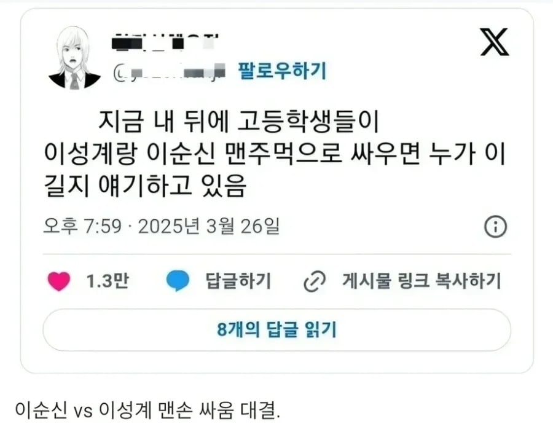

요즘 고등학생들 역사 토론 수준
댓글
정도전 안봤음? 이성계 존나 셈
이건 이성계지
그럼 10명씩 이성계팀 이순신팀 해서 바닷가에서 싸우면 누가 이김?
성계알낳고 다굴당해서 이순신 팀이 짐
맹장 VS 지장
임진왜란 한복판으로 이성계랑 여진족 정예 친위대 1000명 워프되면 어케되냐
선조가 날려버림. 왕위 뺏길까바.
런조생각을 못했네 ㅅㅂ
근데 찐 이성계인거 인증되면 신하들 순식간에 이성계한테 붙는거아니냐
그래서 더더욱. 아들도 날릴라는 놈이 왕할배쯤이야.
이순신 기공신포 쓸 수 있음
빌게이츠랑 추성훈
이순신은 지력캐고 이성계는 무력캐라 당연 이성계가 이기겠지만 마법 허용하면 이순신이 입에서 번개 쏴서 이김
땅 위면 이성계 압승인데, 바다 위면 어떻게 비벼볼 여지 있지 않음? 뱃사람들 깡 마른 노인네가 막 건강한 20대 장정 바다에 집어던지고 그런 일도 있었잖아
그러기엔 이성계도 고려말 해적인 왜구 때려잡고 다녔음
헤전으로 때려잡은게 아니라 육지에서 조진거잖아
이순신이 때리는순간 역적되는데...스읍
이순신은 무과시험도 재순가 하지 않았음? 자체무력은 상대가 안될듯 ㄷㄷ
맨손이면 이성계가 쌉압살일꺼같은데
이성계는 원딜 궁수다, 그런데 궁수가 되려면 스트렝스 존나 찍어야 한다.
이성계는 무과합격했음?
이성계는 무과 원론을 창시하신 분 아니냐
얘네 여기서도 토론중인거 보면 나이가 중요한게 아님ㅋㅋㅋ
ㄹㅇㅋㅋㅋㅋ
주먹질은 이성계가 그냥 이김. 한국 역사에서 개인 무력으로는 이성계가 탑티어임.
이성계 어진 안봤냐?
노인인데 등빨 ㅋㅋㅋㅋ
노템전이면 이성계가 유리하지
당연히 이성계지 북방의 전설이 개 좆으로 보이냐?
이순신은 지장에가까움
궁수는 힘캐야
이순신이 수룡의 힘을 담은 천둥벽력을 날리면 이성계는 오금에서 힘이 풀려나가며 기절초풍해 쓰러질 것임
기를끌어모은 초풍신을..??
이순신은 본인 무력이 강한 분은 아니자너...
이성계가 기수빨로 이김 ㅅㄱ
피지컬은 당연히 이성계 아닌가
이성계지 ㅋㅋㅋ 보우마스터는 힘캐야
무슨 소리임? 이순신 장군님 땅깨출신임
이성계는 고려말에 오랑캐와 왜구 토벌로 영웅이었음
이성계임 ㅅㄱ
맨손이면 이성계지